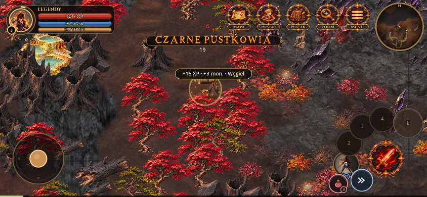
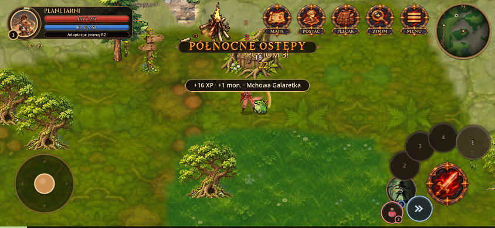
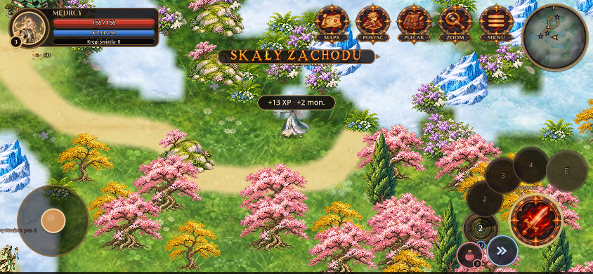
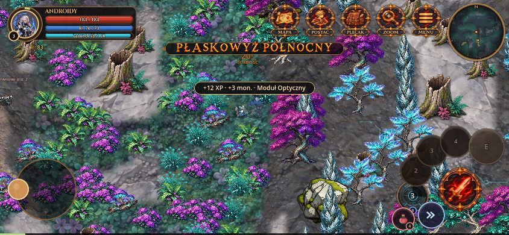
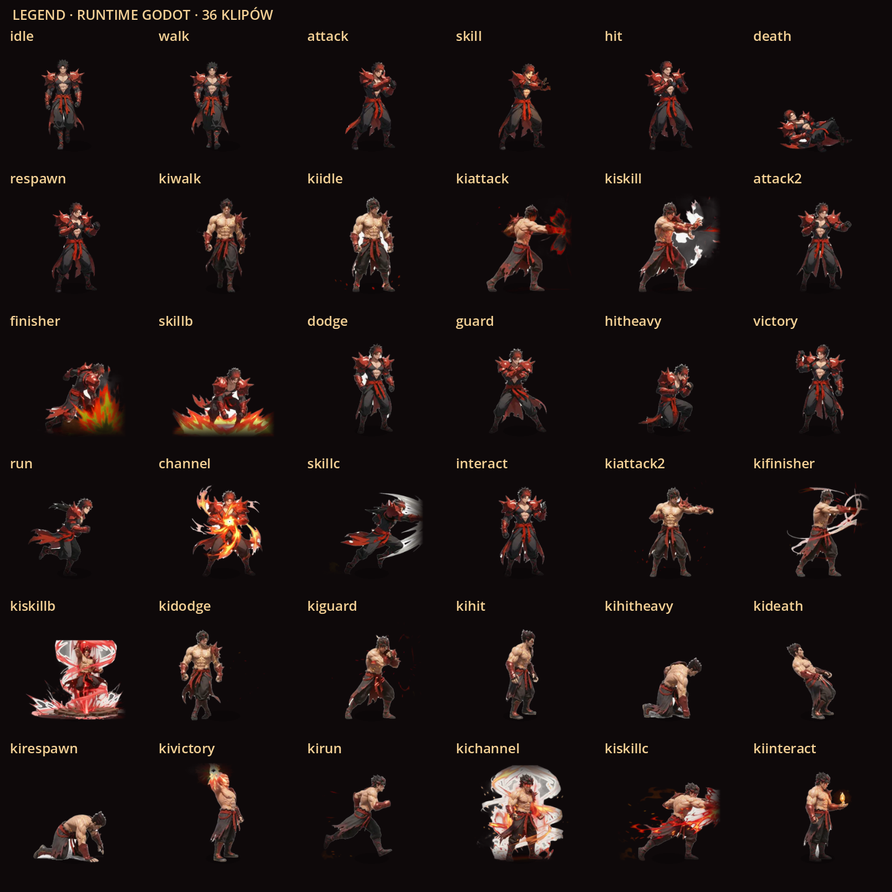
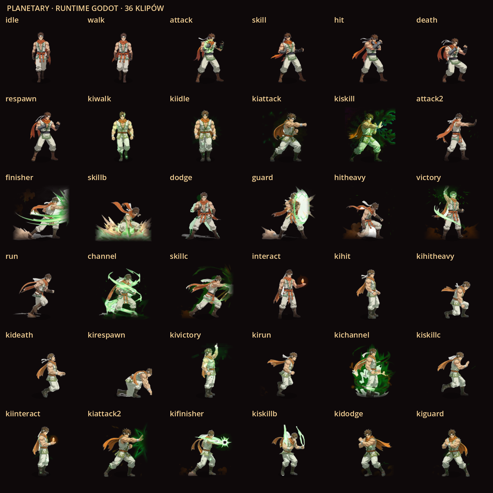
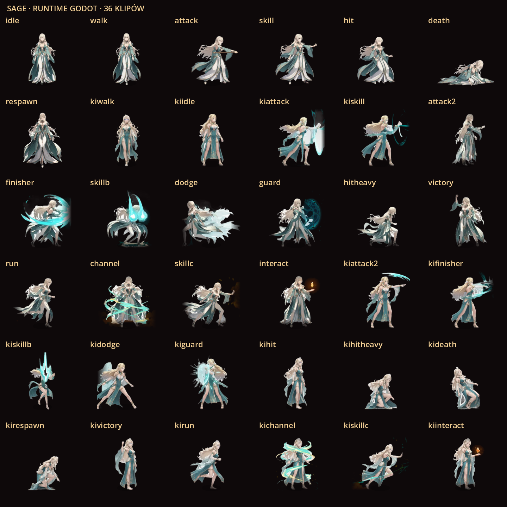
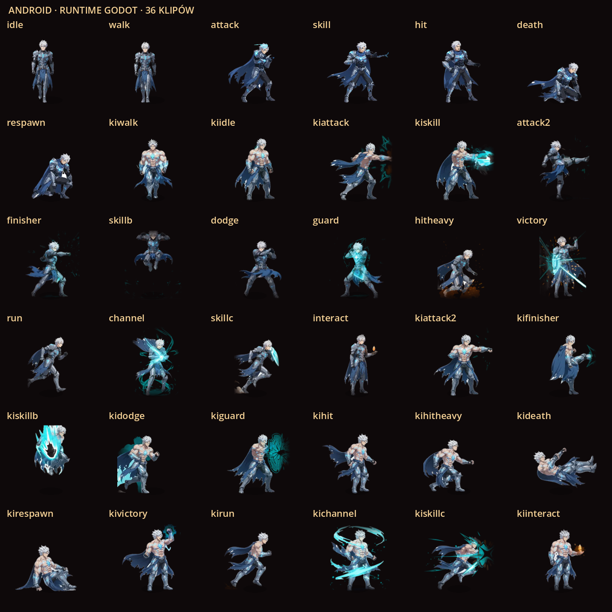

16.11.2026 · Godot 4.6.3 · programowy OpenGL · źródło fe19c7b8549150021cd8b0d7cf8beef4d308f951
ODBIÓR NIEPEŁNY — P1: brak NPC blokuje 11 zadań; awans 1–3 działa dla czterech ras.
Raport PDF · Pełne dane JSON · 132 budynki CSV · 486 kwestii dialogowych CSV
| Rasa | Poziom | Nagradzane zabicia | Śmierci | Odpoczynki w gospodzie | XP z potworów / inne |
|---|---|---|---|---|---|
| Legendy | 3 | 17 | 0 | 4 | 272 / 0 |
| Planetarni | 3 | 17 | 0 | 1 | 272 / 0 |
| Mędrcy | 3 | 20 | 0 | 0 | 260 / 0 |
| Androidy | 3 | 18 | 0 | 0 | 216 / 55 |
Android otrzymał dodatkowe 55 XP poza licznikiem nagradzanych zabić — kwota odpowiada nagrodzie wydarzenia Kordon Dronów. Nie są to komendy GM. Czasy w JSON są czasami symulacji, nie telefonu ani normalnej podróży.

[
{
"kills": 7,
"level": 2,
"simulationSeconds": 38.1333333333325,
"stats": {
"attack": 19,
"attackInterval": 750.0,
"cooldownMul": 1.0,
"crit": 6.3,
"dealt": 1.0,
"defense": 6,
"kiCostMul": 1.0,
"kiRegen": 0.84,
"maxHp": 182,
"maxKi": 43,
"range": 78.0,
"speed": 178.5
},
"xp": 12
},
{
"kills": 17,
"level": 3,
"simulationSeconds": 71.8666666666639,
"stats": {
"attack": 23,
"attackInterval": 750.0,
"cooldownMul": 1.0,
"crit": 6.6,
"dealt": 1.0,
"defense": 8,
"kiCostMul": 1.0,
"kiRegen": 0.88,
"maxHp": 224,
"maxKi": 46,
"range": 78.0,
"speed": 187.0
},
"xp": 12
}
]
[
{
"kills": 7,
"level": 2,
"simulationSeconds": 46.433333333332,
"stats": {
"attack": 16,
"attackInterval": 650.0,
"cooldownMul": 1.0,
"crit": 5.25,
"dealt": 1.0,
"defense": 7,
"kiCostMul": 1.0,
"kiRegen": 1.05,
"maxHp": 161,
"maxKi": 54,
"range": 78.0,
"speed": 194.25
},
"xp": 12
},
{
"kills": 17,
"level": 3,
"simulationSeconds": 97.7666666666624,
"stats": {
"attack": 20,
"attackInterval": 650.0,
"cooldownMul": 1.0,
"crit": 5.5,
"dealt": 1.0,
"defense": 10,
"kiCostMul": 1.0,
"kiRegen": 1.1,
"maxHp": 197,
"maxKi": 58,
"range": 78.0,
"speed": 203.5
},
"xp": 12
}
]
[
{
"kills": 8,
"level": 2,
"simulationSeconds": 38.9999999999991,
"stats": {
"attack": 19,
"attackInterval": 800.0,
"cooldownMul": 1.0,
"crit": 5.2,
"dealt": 1.0,
"defense": 5,
"kiCostMul": 1.0,
"kiRegen": 2.1,
"maxHp": 128,
"maxKi": 87,
"range": 420.0,
"speed": 178.5
},
"xp": 4
},
{
"kills": 20,
"level": 3,
"simulationSeconds": 77.5333333333302,
"stats": {
"attack": 23,
"attackInterval": 800.0,
"cooldownMul": 1.0,
"crit": 5.4,
"dealt": 1.0,
"defense": 6,
"kiCostMul": 1.0,
"kiRegen": 2.2,
"maxHp": 156,
"maxKi": 94,
"range": 420.0,
"speed": 187.0
},
"xp": 0
}
]
[
{
"kills": 9,
"level": 2,
"simulationSeconds": 26.3499999999998,
"stats": {
"attack": 16,
"attackInterval": 700.0,
"cooldownMul": 1.0,
"crit": 8.4,
"dealt": 1.0,
"defense": 10,
"kiCostMul": 1.0,
"kiRegen": 1.26,
"maxHp": 149,
"maxKi": 65,
"range": 360.0,
"speed": 183.75
},
"xp": 8
},
{
"kills": 18,
"level": 3,
"simulationSeconds": 48.2999999999985,
"stats": {
"attack": 20,
"attackInterval": 700.0,
"cooldownMul": 1.0,
"crit": 8.8,
"dealt": 1.0,
"defense": 13,
"kiCostMul": 1.0,
"kiRegen": 1.32,
"maxHp": 183,
"maxKi": 70,
"range": 360.0,
"speed": 192.5
},
"xp": 11
}
]Brak wiązań hunter w czterech docelowych miastach; 11 zadań ma playableInCurrentRuntime=true, lecz brakuje rozmówcy. Dotyczy również O-A05 i O-N05.
Naprawa / odbiór: Dodać NPC do właściwych osad z poprawnym role/binding oraz przetestować przyjęcie i oddanie przypisanych zadań.
Dialogi m.in. Neli, Orena i Nari uruchamiają się pod nazwami Mio, Taro albo Opiekun miasta. Role działają, ale nazwy wskazane graczowi nie odpowiadają widocznym postaciom.
Naprawa / odbiór: Wiązać dane NPC także z miastem, zamiast kopiować imiona NPC stolicy do wszystkich usług.
Dwa ERROR: Lambda capture at index 0 was freed. Passed null instead. Stos: race_kit.gd:445, simulate, Game._process. A1 planuje wybuch po 3 s; martwy potwór usuwa się po około 2 s. Awans nie został przerwany.
Naprawa / odbiór: W opóźnionym efekcie przechowywać WeakRef lub ID i sprawdzać cel dopiero przy wykonaniu; test z zabiciem celu przed wybuchem.
W tablicy rzeczywistych animacji kiskillb pokazuje czerwony pancerz bazowej postaci, podczas gdy kiidle i kiwalk odsłaniają tors. Technicznie klip ma poprawne klatki.
Naprawa / odbiór: Odbiór artystyczny i ewentualna wymiana tego klipu bez zmiany mechaniki.
RASY-I-POSTACIE.md opisuje męską postać; obecny sprite ma kobiecą sylwetkę i strój. Jest to rozbieżność materiału wizualnego z dokumentem, nie błąd odtwarzania animacji.
Naprawa / odbiór: Potwierdzić zatwierdzony wzorzec; nie zmieniano grafiki ani kanonu w audycie.
Część testów kończy się ostrzeżeniem o pozostawionych obiektach. Nie zaliczono przez to czystego shutdown ani całego CI.
Naprawa / odbiór: Osobny audyt cyklu życia i pamięci; nie mylić ostrzeżeń zamykania z błędem Mędrca podczas walki.
| Quest | Nazwa | NPC | Miasto | Min. poziom |
|---|---|---|---|---|
| S-V12 | Olej do północnych latarń | Lina (Strażniczka Latarni) | Latarnia Korzeni | 6 |
| H-V03 | Ukryta Przygoda: Przysięga pod Starym Dębem | Lina (Strażniczka Latarni) | Latarnia Korzeni | 6 |
| S-P09 | Zasypany schron na zachodzie | Toren (Strażnik Traktu) | Żarowy Trakt | 3 |
| H-P01 | Ukryta Przygoda: Przysięga Dwunastu z Kaplicy | Toren (Strażnik Traktu) | Żarowy Trakt | 3 |
| O-A05 | Zwierciadła Archiwum Nad Chmurami | Talen (Obserwator Niebios) | Archiwum Nad Chmurami | 4 |
| S-A06 | Konserwacja Zwierciadeł Talena | Talen (Obserwator Niebios) | Archiwum Nad Chmurami | 3 |
| S-A12 | Pióra Mgielnych Żurawi | Talen (Obserwator Niebios) | Archiwum Nad Chmurami | 6 |
| IC-05 | Obserwatorzy Czterech Horyzontów | Talen (Obserwator Niebios) | Archiwum Nad Chmurami | 6 |
| O-N05 | Echo Portu Zerowego | VEX-3 (Nawigator Portu Zerowego) | Port Zerowy | 4 |
| S-N06 | Zakłócenia na Częstotliwości VEX-3 | VEX-3 (Nawigator Portu Zerowego) | Port Zerowy | 4 |
| S-N12 | Polowanie na Kruki Danych | VEX-3 (Nawigator Portu Zerowego) | Port Zerowy | 7 |
| NPC | Miasto | Nazwa w grze | Wynik |
|---|---|---|---|
| Aira | Zielona Przystań | Aira / Opiekun szlaku | ZGODNY |
| Mio | Zielona Przystań | Mio | ZGODNY |
| Taro | Zielona Przystań | Taro | ZGODNY |
| Ren | Zielona Przystań | Ren | ZGODNY |
| Nela (Przewoźniczka) | Przystań Trzech Mostów | Mio | INNA NAZWA |
| Oren (Kartograf Osady) | Kamienny Sad | Taro | INNA NAZWA |
| Lina (Strażniczka Latarni) | Latarnia Korzeni | — | BRAK NPC |
| Kaena | Twierdza Popiołu | Kaena / Opiekun szlaku | ZGODNY |
| Yumi | Twierdza Popiołu | Yumi | ZGODNY |
| Goro | Twierdza Popiołu | Goro | ZGODNY |
| Rokan | Twierdza Popiołu | Rokan | ZGODNY |
| Toren (Strażnik Traktu) | Żarowy Trakt | — | BRAK NPC |
| Hana (Płatnerka Obsydianu) | Cytadela Kowadeł | Goro | INNA NAZWA |
| Daro (Ssternik Przymierza) | Port Czerwonych Żagli | Yumi | INNA NAZWA |
| Sora | Sanktuarium Tysiąca Źródeł | Opiekun szlaku / Sora | ZGODNY |
| Mei | Sanktuarium Tysiąca Źródeł | Mei | ZGODNY |
| Enso | Sanktuarium Tysiąca Źródeł | Enso | ZGODNY |
| Ishin | Sanktuarium Tysiąca Źródeł | Ishin | ZGODNY |
| Nari (Archiwistka) | Tarasy Świtu | Opiekun miasta | INNA NAZWA |
| Kael (Przewoźnik Mgły) | Biała Przystań | Mei | INNA NAZWA |
| Talen (Obserwator Niebios) | Archiwum Nad Chmurami | — | BRAK NPC |
| LYRA-7 | Węzeł Świadomości | LYRA-7 / Opiekun szlaku | ZGODNY |
| MIRA-2 | Węzeł Świadomości | MIRA-2 | ZGODNY |
| HEF-4 | Węzeł Świadomości | HEF-4 | ZGODNY |
| AXON | Węzeł Świadomości | AXON | ZGODNY |
| Eko-0 (Jednostka Serwisowa) | Stacja Meridian | Opiekun miasta | INNA NAZWA |
| KОР-9 (Mistrz Spawu) | Kuźnia Obwodów | HEF-4 | INNA NAZWA |
| VEX-3 (Nawigator Portu Zerowego) | Port Zerowy | — | BRAK NPC |
Każde wejście, NPC usługi, otwarcie funkcji i powrót pod właściwe drzwi. Lokalne podejście do celu; nie jest to test pełnej trasy przez miasto.
| Kraina | Wejście | Usługa | Wejście / usługa / powrót |
|---|---|---|---|
| pyra | accepted-hall | hall | True / True / True |
| pyra | accepted-shop | shop | True / True / True |
| pyra | accepted-arena | arena | True / True / True |
| pyra | accepted-depot | depot | True / True / True |
| pyra | accepted-smithy | smithy | True / True / True |
| pyra | accepted-inn | inn | True / True / True |
| pyra | pyra-town-1-shop | shop | True / True / True |
| pyra | pyra-town-1-hall | hall | True / True / True |
| pyra | pyra-town-1-inn | inn | True / True / True |
| pyra | pyra-town-1-smithy | smithy | True / True / True |
| pyra | pyra-town-1-depot | depot | True / True / True |
| pyra | pyra-town-1-arena | arena | True / True / True |
| pyra | pyra-town-2-shop | shop | True / True / True |
| pyra | pyra-town-2-hall | hall | True / True / True |
| pyra | pyra-town-2-inn | inn | True / True / True |
| pyra | pyra-town-2-smithy | smithy | True / True / True |
| pyra | pyra-town-2-depot | depot | True / True / True |
| pyra | pyra-town-2-arena | arena | True / True / True |
| pyra | pyra-town-3-shop | shop | True / True / True |
| pyra | pyra-town-3-hall | hall | True / True / True |
| pyra | pyra-town-3-inn | inn | True / True / True |
| pyra | pyra-town-3-smithy | smithy | True / True / True |
| pyra | pyra-town-3-depot | depot | True / True / True |
| pyra | pyra-town-3-arena | arena | True / True / True |
| verdant | accepted-hall | hall | True / True / True |
| verdant | accepted-shop | shop | True / True / True |
| verdant | accepted-arena | arena | True / True / True |
| verdant | accepted-depot | depot | True / True / True |
| verdant | accepted-smithy | smithy | True / True / True |
| verdant | accepted-inn | inn | True / True / True |
| verdant | verdant-town-1-shop | shop | True / True / True |
| verdant | verdant-town-1-hall | hall | True / True / True |
| verdant | verdant-town-1-inn | inn | True / True / True |
| verdant | verdant-town-1-smithy | smithy | True / True / True |
| verdant | verdant-town-1-depot | depot | True / True / True |
| verdant | verdant-town-1-arena | arena | True / True / True |
| verdant | verdant-town-2-shop | shop | True / True / True |
| verdant | verdant-town-2-hall | hall | True / True / True |
| verdant | verdant-town-2-inn | inn | True / True / True |
| verdant | verdant-town-2-smithy | smithy | True / True / True |
| verdant | verdant-town-2-depot | depot | True / True / True |
| verdant | verdant-town-2-arena | arena | True / True / True |
| verdant | verdant-town-3-shop | shop | True / True / True |
| verdant | verdant-town-3-hall | hall | True / True / True |
| verdant | verdant-town-3-inn | inn | True / True / True |
| verdant | verdant-town-3-smithy | smithy | True / True / True |
| verdant | verdant-town-3-depot | depot | True / True / True |
| verdant | verdant-town-3-arena | arena | True / True / True |
| aether | accepted-hall | hall | True / True / True |
| aether | accepted-shop | shop | True / True / True |
| aether | accepted-arena | arena | True / True / True |
| aether | accepted-depot | depot | True / True / True |
| aether | accepted-smithy | smithy | True / True / True |
| aether | accepted-inn | inn | True / True / True |
| aether | aether-town-1-shop | shop | True / True / True |
| aether | aether-town-1-hall | hall | True / True / True |
| aether | aether-town-1-inn | inn | True / True / True |
| aether | aether-town-1-smithy | smithy | True / True / True |
| aether | aether-town-1-depot | depot | True / True / True |
| aether | aether-town-1-arena | arena | True / True / True |
| aether | aether-town-2-shop | shop | True / True / True |
| aether | aether-town-2-hall | hall | True / True / True |
| aether | aether-town-2-inn | inn | True / True / True |
| aether | aether-town-2-smithy | smithy | True / True / True |
| aether | aether-town-2-depot | depot | True / True / True |
| aether | aether-town-2-arena | arena | True / True / True |
| aether | aether-town-3-shop | shop | True / True / True |
| aether | aether-town-3-hall | hall | True / True / True |
| aether | aether-town-3-inn | inn | True / True / True |
| aether | aether-town-3-smithy | smithy | True / True / True |
| aether | aether-town-3-depot | depot | True / True / True |
| aether | aether-town-3-arena | arena | True / True / True |
| nexus | accepted-hall | hall | True / True / True |
| nexus | accepted-shop | shop | True / True / True |
| nexus | accepted-arena | arena | True / True / True |
| nexus | accepted-depot | depot | True / True / True |
| nexus | accepted-smithy | smithy | True / True / True |
| nexus | accepted-inn | inn | True / True / True |
| nexus | nexus-town-1-shop | shop | True / True / True |
| nexus | nexus-town-1-hall | hall | True / True / True |
| nexus | nexus-town-1-inn | inn | True / True / True |
| nexus | nexus-town-1-smithy | smithy | True / True / True |
| nexus | nexus-town-1-depot | depot | True / True / True |
| nexus | nexus-town-1-arena | arena | True / True / True |
| nexus | nexus-town-2-shop | shop | True / True / True |
| nexus | nexus-town-2-hall | hall | True / True / True |
| nexus | nexus-town-2-inn | inn | True / True / True |
| nexus | nexus-town-2-smithy | smithy | True / True / True |
| nexus | nexus-town-2-depot | depot | True / True / True |
| nexus | nexus-town-2-arena | arena | True / True / True |
| nexus | nexus-town-3-shop | shop | True / True / True |
| nexus | nexus-town-3-hall | hall | True / True / True |
| nexus | nexus-town-3-inn | inn | True / True / True |
| nexus | nexus-town-3-smithy | smithy | True / True / True |
| nexus | nexus-town-3-depot | depot | True / True / True |
| nexus | nexus-town-3-arena | arena | True / True / True |
| island-1 | island-1-harbour-shop | shop | True / True / True |
| island-1 | island-1-harbour-hall | hall | True / True / True |
| island-1 | island-1-harbour-inn | inn | True / True / True |
| island-1 | island-1-harbour-smithy | smithy | True / True / True |
| island-1 | island-1-harbour-depot | depot | True / True / True |
| island-1 | island-1-harbour-arena | arena | True / True / True |
| island-2 | island-2-harbour-shop | shop | True / True / True |
| island-2 | island-2-harbour-hall | hall | True / True / True |
| island-2 | island-2-harbour-inn | inn | True / True / True |
| island-2 | island-2-harbour-smithy | smithy | True / True / True |
| island-2 | island-2-harbour-depot | depot | True / True / True |
| island-2 | island-2-harbour-arena | arena | True / True / True |
| island-3 | island-3-harbour-shop | shop | True / True / True |
| island-3 | island-3-harbour-hall | hall | True / True / True |
| island-3 | island-3-harbour-inn | inn | True / True / True |
| island-3 | island-3-harbour-smithy | smithy | True / True / True |
| island-3 | island-3-harbour-depot | depot | True / True / True |
| island-3 | island-3-harbour-arena | arena | True / True / True |
| island-4 | island-4-harbour-shop | shop | True / True / True |
| island-4 | island-4-harbour-hall | hall | True / True / True |
| island-4 | island-4-harbour-inn | inn | True / True / True |
| island-4 | island-4-harbour-smithy | smithy | True / True / True |
| island-4 | island-4-harbour-depot | depot | True / True / True |
| island-4 | island-4-harbour-arena | arena | True / True / True |
| island-5 | island-5-harbour-shop | shop | True / True / True |
| island-5 | island-5-harbour-hall | hall | True / True / True |
| island-5 | island-5-harbour-inn | inn | True / True / True |
| island-5 | island-5-harbour-smithy | smithy | True / True / True |
| island-5 | island-5-harbour-depot | depot | True / True / True |
| island-5 | island-5-harbour-arena | arena | True / True / True |
| island-6 | island-6-harbour-shop | shop | True / True / True |
| island-6 | island-6-harbour-hall | hall | True / True / True |
| island-6 | island-6-harbour-inn | inn | True / True / True |
| island-6 | island-6-harbour-smithy | smithy | True / True / True |
| island-6 | island-6-harbour-depot | depot | True / True / True |
| island-6 | island-6-harbour-arena | arena | True / True / True |
144 klipy, 1152 pary klip/kierunek, 8384 odwołania do klatek, zero pustych klatek alfa. To kontrola techniczna i podgląd, nie potwierdzenie spójności artystycznej wszystkich efektów.




Warianty przed / w trakcie / po zadaniu są kontrolowanymi stanami silnika dialogów. 57 kwestii czterech brakujących NPC nie ma rozmówcy w świecie.
Niech korzenie Verdantii prowadzą twe kroki, wędrowcze. Czuję w tobie czysty przepływ energii KI.
Witaj w Zielonej Przystani. Prastare korony szumią dziś niespokojnie, lecz w naszej osadzie jesteś bezpieczny.
Niech zieleń da ci ukojenie. Jeśli twoje serce bije w rytmie Puszczy, znajdziesz tu dom i cel.
Na południe stąd leży Źródło Pierwszego Drzewa. Mówią, że woda czerpana o świcie leczy rany duszy, lecz pilnują jej czujne leśne bestie.
Most Splątanych Korzeni łączy nas z wschodnimi bagnami. Uważaj pod nim — nocami pnącza same zaciskają się na nieostrożnych stopach.
W głębi kniei, w Opuszczonej Chacie Zielarza Pierwszej Ery, wciąż tli się zapomniana receptura eliksiru żywicznego.
Witaj w Verdantii. Zanim wyruszymy w głąb puszczy, musisz zrozumieć tutejszy rytm życia i oczyścić najbliższy szlak z niespokojnych szlamaków.
Mchowe Szlamaki wciąż podchodzą pod palisadę Zielonej Przystani. Odszukaj je na ścieżce i przywróć równowagę.
Doskonale. Wyczuwam, że las przyjął twój dar. Szlak jest znów bezpieczny dla zbieraczy mchu.
Nasze patrole meldują o Cierniowych Wilkach grasujących w pobliżu mostów. Potrzebujemy zwiadu wzdłuż starego traktu.
Uważaj na watahę w cieniu paproci. Cierniowe Wilki atakują stadnie, gdy wyczują wahanie.
Wataha została rozproszona. Dzięki tobie kurierzy mogą przejść suchą stopą do Przystani Trzech Mostów.
Z pradawnych ruin dochodzą echa dziwnego pulsu. Czas, abyś zbadał Źródło Pierwszego Drzewa i jego pradawne mechanizmy.
Źródło tętni na południowym skraju polany. Sprawdź, co zakłóca pierwotny rezonans KI.
Woda w źródle znowu płynie krystalicznym błękitem. Prastary duch puszczy odetchnął z ulgą.
Zaburzenia rozprzestrzeniają się ku wschodnim lasom. Czas udać się do Kamiennego Sadu i skonsultować mapy z Orenem.
Droga do Kamiennego Sadu jest długa. Pamiętaj o uzupełnieniu zapasów w sakwie przed wyruszeniem.
Wiadomości od Orena potwierdzają moje obawy — zjawisko dotyka całej Verdantii, nie tylko naszej doliny.
Północne pnącza oplatają Latarnię Korzeni. Strażniczka Lina potrzebuje wsparcia doświadczonego wojownika KI.
Latarnia Korzeni stoi na stromym wzgórzu. Jej światło nie może zgasnąć, bo zagubią się nocne karawany.
Światło latarni rozprasza mgły. Twoje poświęcenie dla Planetarnych staje się pieśnią powtarzaną wśród gałęzi.
Czas na ostateczne oczyszczenie matecznika. Rdzeń Puszczy wzywa cię na próbę hartu ducha i siły uderzeń.
Skup całą energię w uderzeniach. Nie pozwól, aby mrok zachwiał harmonicznym przepływem energii KI.
Dokonałeś tego! Puszcza jest wolna, a twoje imię zostało wyryte w zwojach Zielonej Przystani na wieki.
Jako nowo mianowany obrońca puszczy musisz przejść Rytuał Pierwszego Pąka. Przynieś mi dowód swej więzi z lasem.
Rytuał wymaga skupienia i szacunku dla powalonych pni. Znajdź święte nasiono w gęstwinie.
Pąk zakwitł w twojej dłoni szmaragdowym blaskiem. Prawdziwy z ciebie wojownik Planetarnych.
Głęboko w Kniewie zagnieździł się pradawny relikt. To zadanie dla mistrza, który potrafi stawić czoła pradawnym bestiom.
Zmierzasz ku zapomnianym zrębom. Bądź czujny, bo tamtejsze bestie nie znają litości.
Relikt spoczął w bezpiecznym archiwum. Verdantia zawdzięcza ci ocalenie swojego prastarego dziedzictwa.
Dotarły do nas niepokojące wieści z Aetherii. Złote zwoje Mędrców wspominają o wspólnym zagrożeniu dla obu światów.
Przygotuj raport dla posłów Mędrców. Mosty międzykontynentalne wymagają czujności.
Posłowie przyjęli naszą przestrogę. Sojusz Planetarnych z Mędrcami nabiera realnych kształtów.
Wielki Trakt Dyplomatyczny wymaga otwarcia bezpiecznego kanału z Nexus-9 i Pyrą. Podejmij się tej misji.
Podróżuj z poselstwem. Każdy kontynent ma własne prawa, lecz wspólna planeta wymaga jedności.
Wielki Trakt został zaprzysiężony. Twoje czyny przekroczyły granice samej Verdantii.
Zioła, esencje, żywiczne bandaże! U Mio kupisz tylko towar najwyższej próby.
Witaj! Pokaż, co znalazłeś w kniei — płacę uczciwie brzęczącą monetą za rzadkie składniki.
Potrzebujesz zapasów na drogę? Bez dobrej mikstury w ostępy Verdantii lepiej się nie zapuszczać.
Mówią, że w Mszanej Przystani rybacy wyławiają bursztyny wielkości pięści z zatopionych korzeni.
Stara Kuźnia Żywego Korzenia na wschodzie wciąż dymi w bezwietrzne noce, choć mistrz kowalski odszedł stamtąd lata temu.
Kupcy szeptają, że na szlaku do Kamiennego Sadu grasuje złodziej kradnący wyłącznie nasiona świecących mchów.
Brakuje mi mchowej galaretki do wywaru leczniczego. Czy przyniesiesz mi kilka próbek od szlamaków z doliny?
Szukaj szlamaków w wilgotnych parowach na zachód od osady. Uważaj, by galaretka nie wyschła!
Świetny materiał! Teraz uwarzę maści, które postawią na nogi każdego zmęczonego zwiadowcę.
Zasadziłam lecznicze zioła przy południowym strumieniu, ale zagnieździły się tam jadowite żądła. Pomóż mi je zebrać.
Uważaj na brzęczące osy przy zaroślach. Chodzi o zebranie świeżych liści i oczyszczenie terenu.
Zapach tych ziół przywraca siły od samego wdechu. Masz tu swoją dolę monet i miksturę na drogę.
Karawana handlowa utknęła na starym nasypie przez rozszalałe korzeniowce. Zabezpiecz ładunek rzadkich korzeni.
Rozprosz korzeniowce wokół wozów i przynieś mi plombowaną skrzynię z nasionami.
Wszystkie nasiona nienaruszone! Uratowałeś mój miesięczny dochód, wędrowcze.
Uderzaj w żelazo póki tętni w nim energia KI! W czym mogę ci pomóc?
Ostrza z zielonej żywicy nie pękają pod żadnym ciosem. Szukasz solidnego oręża?
Witaj przy kowadle. Dym z żywicznego drewna dobrze robi na płuca i odstrasza leśne insekty.
W Kuźni Żywego Korzenia spoczywa matryca, która potrafi stopić stal bez użycia węgla, wyłącznie żarem żywicy.
Powiadają, że na bagnach można znaleźć skamieniałe kły bestii twardsze niż zahartowany bazalt.
Gdy rzeka opada po ulewach, przy Mostach ukazują się ślady dawnych wojennych rydwanów.
Moje zapasy twardej kory i kłów do oprawy rękojeści wyczerpały się. Zdobądź dla mnie materiał od leśnych drapieżników.
Potrzebuję nienaruszonych kłów i włókien korzeniowych. Sprawdź okolice gęstwin na północ od kuźni.
Te kły mają idealną strukturę. Wykuję z nich rękojeść, która nigdy nie wyślizgnie się z dłoni.
Chcę odtworzyć legendarny szmaragdowy miecz z Pierwszej Ery. Potrzebuję fragmentu żywego korzenia ze sławnej kuźni.
Udaj się do Kuźni Żywego Korzenia i zbadaj pradawny piec. Przynieś mi nasyconą szlakę.
Niewiarygodne! Żar w tym kruszcu wciąż pulsuje. Zaraz zabieram się do kucia prototypu oręża.
Kowale z Pyry przysłali wyzwanie rzemieślnicze. Musimy udowodnić wyższość żywicznego hartowania nad czystą lawą.
Przygotuj wzorcowy stop oręża Verdantii do wysyłki na południowy kontynent.
Mistrzowie z Kalderonu zaniemówili na widok elastyczności naszej klingi. Honor kowali Verdantii został obroniony!
Cisza. W lesie najpierw słuchasz, potem patrzysz, a dopiero na końcu sięgasz po broń.
Wróciłem ze zwiadu. Szlaki na północ stają się coraz bardziej zdradliwe.
Witaj, cichy wędrowcze. Twoje kroki są lekkie, a to rzadka zaleta w tych czasach.
Widziałem ze szczytu dębów dziwne światła wokół Mostu Splątanych Korzeni. To nie były świetliki ani ogniska kłusowników.
W zaroślach niedaleko Kamiennego Sadu odnaleziono opuszczony obóz zwiadowców z emblematem dawnego królestwa.
Puchacze pyłowe krążą nad starymi kurhanami. Gdy te ptaki nie śpią za dnia, w ziemi budzi się coś niespokojnego.
Zauważyłem tropy leśnych pająków wokół zachodniego duktu. Sprawdź ich gniazdo i zabezpiecz ścieżkę zwiadowczą.
Gniazdo znajduje się pod wykrotem starego wiązu. Wytnij kokony i zlikwiduj pajęcze straże.
Ścieżka zwiadu jest czysta. Znakomicie poruszasz się w gęstwinie.
Zaginął jeden z naszych młodszych tropicieli. Ostatni raz widziano go przy zwalonym pniu na wschodnich mokradłach.
Podążaj za śladami złamanych gałęzi ku bagnom. Miejmy nadzieję, że chłopak jeszcze żyje.
Odnaleziony i bezpieczny w chacie medyka. Verdantia nie zapomina o tych, którzy ratują jej synów.
Wataha puchaczy pyłowych zaślepia wędrowców pyłkami ze swoich piór. Musimy ukrócić ich agresję na głównym szlaku.
Puchacze gnieżdżą się w koronach drzew przy starym trakcie. Wywabić je możesz tylko dźwiękiem rogu.
Niebo nad traktem znowu jest czyste. Podróżni nie muszą już obawiać się pyłowego zaślepienia.
Odkryłem ukryte przejście w korzeniach najstarszego dębu. Legenda mówi o sanktuarium pradawnego strażnika puszczy.
Wejdź w szczelinę między korzeniami. Zapal żywiczną pochodnię, by nie zabłądzić w plątaninie korytarzy.
Skarb pradawnych strażników ujrzał światło dzienne. Znalazłeś artefakt, który pamięta narodziny kontynentu.
Doniesienia z Wysp Pośrednich mówią o dziwnych prądach morskich spychających łodzie w stronę Wielkiego Wiru.
Zbadaj wybrzeże i zbierz dane nawigacyjne od przybrzeżnych obserwatorów.
Mapy prądów zostały zaktualizowane. To bezcenna wiedza przed planowaną ekspedycją oceaniczną.
Woda płynie wartko, ale moja łódź nigdy nie zawodzi. Dokąd chcesz się przeprawić?
Przystań Trzech Mostów wita wędrowca! Rzeka to najszybsza droga przez gęste ostępy Verdantii.
Witaj! Uważaj na śliskie deski pomostu — rzeka wezbrała po wczorajszych opadach w górnym biegu.
Pod Trzema Mostami żyją sumy tak olbrzymie, że potrafią wywrócić pustą łódź. Żywią się żywicznymi orzechami.
Na drugim brzegu, tuż za trzcinami, znajduje się zapomniany ołtarz rzecznego ducha, gdzie dawniej składano lilie wodne.
Most Splątanych Korzeni widać stąd o zmierzchu — korzenie świecą wtedy bladym, szmaragdowym blaskiem.
Rzeka naniosła pnie i zablokowała środkowe przęsło mostu. Potrzebuję kogoś silnego, by rozbił zator i odpędził rzeczne pełzacze.
Zejdź na płyciznę przy filarach mostu. Oczyść koryto i uważaj na wiry pod filarem.
Nurt znów płynie swobodnie! Łodzie handlowe mogą bezpiecznie cumować przy naszych pomostach.
Muszę dostarczyć pilną przesyłkę z lekarstwami do odciętej osady rybackiej. Czy podejdziesz wzdłuż szuwarów?
Droga brzegiem jest podmokła. Uważaj na błotne zasadzki i dostarcz pakunek w całości.
Rybacy dziękują ci ze łzami w oczach. Bez tych lekarstw gorączka z bagien zabrałaby niejedno życie.
Znalazłam w mule rzecznym starożytną tabliczkę z wyrytą mapą zalanej pieczary. Czy odważysz się tam zajrzeć?
Jaskinia znajduje się za kurtyną wodospadu na północ od przystani. Weź ze sobą zapas powietrza.
Niewiarygodne! Zatopiony ołtarz krył nienaruszony kryształ czystej energii wodnej.
Kamień milczy, ale pamięta więcej niż najstarsze księgi. Witaj w Kamiennym Sadzie.
Każda rysa na tych głazach to zapis dawnych trzęsień i przemian KI. Co sprowadza cię w nasze skromne progi?
Witaj, podróżniku. Jeśli szukasz dokładnych map tutejszych wąwozów, trafiłeś pod właściwy adres.
Głazy w Kamiennym Sadzie nie leżą tu przypadkowo — to pradawny kalendarz astronomiczny dawnych Planetarnych.
Wąwóz Cieni na wschodzie odbija echa kroków, nawet gdy nikt w nim nie idzie. Miejscowi omijają go po zmroku.
Kuźnia Żywego Korzenia była niegdyś połączona podziemnym kanałem z naszymi kamieniołomami.
Skalne jelenie zniszczyły moje punkty triangulacyjne na wzgórzach. Muszę odnowić pomiary granicy lasu.
Odwiedź trzy punkty pomiarowe na skalnych graniach i odnotuj odczyty na pergaminie.
Pomiary są kompletne! Dzięki tobie nowa mapa wschodniej Verdantii będzie najdokładniejsza od stuleci.
Jeden z głazów w sadzie ma wydrążony otwór pasujący do runicznego klucza. Odszukaj brakujący fragment w wąwozie.
Klucz runiczny został porzucony w starym legowisku bestii. Odszukaj go i dopasuj do monolitu.
Mechanizm zaskoczył! Wewnątrz głazu spoczywał pradawny traktat o harmonii kamienia i drzewa.
Dopóki ogień latarni płonie, żaden wędrowiec nie zginie w północnych moczarach. Witaj!
Witaj na północnej rubieży. Wiatr od morza niesie chłód, ale w cieple latarni zawsze znajdziesz schronienie.
Krocz ostrożnie po wąskich stopniach. Widok ze szczytu latarni obejmuje całą zieloną koronę Verdantii.
Gdy w nocy patrzy się z latarni na północ, na horyzoncie majaczą kontury Latających Wysp Mędrców z Aetherii.
Pod fundamentami latarni znajduje się naturalna szczelina geotermalna, która zasila jej wieczny płomień.
W starym gnieździe puchaczy na klifie znaleziono pierścień z herbem dawnego admirała floty handlowej.
Olej żywiczny do zasilania zwierciadła latarni kończy się. Przynieś mi czystą żywicę z prastarych sosen na klifie.
Żywicę zbieraj tylko z naciętych pni oznaczonych znakiem strażników. Uważaj na strome zbocza.
Zwierciadło lśni pełnym blaskiem! Dziękuję ci w imieniu wszystkich żeglarzy i wędrowców nocy.
Zauważyłam jaskinię odsłoniętą przez ostatnie oberwanie klifu pod latarnią. Wygląda na zapomniany skład rozbitków.
Zejdź po linie na półkę skalną i zbadaj wejście do jaskini. Miej broń w pogotowiu.
Odnaleźliśmy skrzynię nawigatora z nienaruszonym kompasem i zapiskami o sekretnych zatokach!
Witaj w Twierdzy Popiołu. Tutaj hartuje się stal i męstwo, a słabość spala się w płomieniach.
Ogień Pyry nie pyta o pochodzenie, lecz o siłę woli. Wykaż się czynem, a zyskasz szacunek Legend.
Popiół i krew to fundamenty tej twierdzy. Stań prosto przed wodzem i mów, z czym przychodzisz.
Na zachodzie wznosi się Cytadela Pierwszego Płomienia. Mówią, że wieczny ogień w jej sercu zapalili sami pradawni tytani.
Kaplica Krwi i Popiołu kryje ołtarze, na których dawni berserkerzy składali przysięgi przed wielkimi wyprawami wojennymi.
Wulkaniczny Kolos na południowym krańcu kontynentu spogląda w stronę oceanu — legenda głosi, że ożyje, gdy zatrzęsie się cała planeta.
Jeśli chcesz dowieść swej wartości wśród wojowników Pyry, musisz wyjść poza mury twierdzy i okiełznać wściekłe węgiełki oraz salamandry.
Zejdź na bazaltowe tarasy i ugaś furię ognistych bestii. Pokaż, że twój duch nie ugina się przed żarem.
Dobra robota. Twoje ostrze nie zadrżało w ogniu. Zasłużyłeś na prawo noszenia znaku bojowego Twierdzy.
Popielne wilki odcięły szlak zaopatrzeniowy ku Żarowemu Traktowi. Czas ruszyć z kontratakiem.
Wytrop przywódcę watahy w załomach skalnych i przywróć porządek na szlaku.
Szlak znów jest przejezdny. Kupcy z Twierdzy nie zapomną twojej determinacji.
Cytadela Pierwszego Płomienia tętni niebezpiecznym żarem. Musisz zbadać tamtejszy piec i upewnić się, że magma nie przerwie wałów.
Zbadaj ołtarz ognia wewnątrz Cytadeli. Uważaj na tryskające gejzery lawy.
Wały zostały zabezpieczone. Pradawny ogień tytanów płonie teraz pod kontrolą naszych strażników.
Czas na wyprawę do Cytadeli Kowadeł. Spotkaj się z kowalami i odbierz przygotowany zapas ciężkich płyt pancerza.
Przejdź przez kanion obsydianu. Ścieżka jest wąska i narażona na spadające odłamki bazaltu.
Pancerze dotarły na czas. Nasze oddziały przednie są gotowe na każde starcie.
Port Czerwonych Żagli melduje o podejrzanych statkach u brzegów. Wyrusz na południe i sprawdź gotowość floty.
Kapitan Daro czeka na nabrzeżu w porcie. Przeprowadź inspekcję umocnień nabrzeżnych.
Flota stoi w gotowości, a straże przybrzeżne zostały wzmocnione. Południowa granica Pyry jest bezpieczna.
Nadszedł czas na ostateczną próbę ognia na Wielkiej Arenie. Stań naprzeciw elity wojowników i zdobądź tytuł Bohatera Kalderonu.
Wejdź na piasek areny pod spojrzeniami tysięcy wojowników. Niech twoja energia KI eksploduje pełnią potęgi.
Niechaj ryk tłumu niesie twoje imię aż po szczyty wulkanów! Jesteś prawdziwym Czempionem Legend!
Jako uznany wojownik musisz złożyć przysięgę krwi przy Ołtarzu Wygasłych Ostrzy. Przynieś trofeum z pokonanego berserkera.
Ołtarz wznosi się na samotnej iglicy skalnej. Pokonaj strażnika wzgórza i złóż dar godny wojownika.
Przysięga została przyjęta przez duchy dawnych wodzów. Twoja broń otrzymała błogosławieństwo ognia.
Z głębi kaldery wyłania się starożytny kolos ognia. To starcie, o którym pieśni będą śpiewać przez pokolenia.
Zstąp do krateru. Uderzaj w pęknięcia pancerza kolosa, gdy ten przygotowuje uderzenie obszarowe.
Tytan padł, a jego serce z krzepnącej lawy spoczęło w skarbcu Twierdzy. Pyra nigdy nie zapomni tego czynu.
Potrzebujesz ostrzałki, pyłu lawowego czy solidnych pasów? U Yumi kupisz ekwipunek, który nie stopi się w walce.
Witaj! Pokaż, jakie trofea przynosisz z lawowych pustkowi. Dla rzadkich skór i rogów zawsze mam pełną sakiewkę.
W Pyry nikt nie handluje świecidełkami. Sprzedaję wyłącznie to, co chroni życie i zadaje śmiertelne rany.
W kopalniach za Cytadelą Kowadeł natrafiono na żyłę czarnego obsydianu, który odbija zaklęcia eteryczne.
Na szlaku do Portu widywano skalnego berserkera niosącego kamienny kufer z herbem zaginionego legionu.
Mówią, że woda w zatoce Portu Czerwonych Żagli wrze od podwodnych kominów hydrotermalnych.
Brakuje mi pancerzy magmowych krabów do wzmocnienia napierśników rekrutów. Zapoluj na nie wzdłuż lawowego strumienia.
Krabie skorupy zbieraj ostrożnie szczypcami — świeża skorupa parzy nawet przez grube rękawice.
Te pancerze są twarde jak żelazo. Płatnerze od razu wezmą się do kucia dodatkowych wzmocnień.
Żarowe nietoperze zanieczyszczają zapasy suszonego mięsa w zachodnich magazynach. Oczyść pieczary magazynowe.
Nietoperze chowają się pod stropem jaskini. Wykurz je dymem ze spalonej siarki i zlikwiduj gniazda.
Magazyny są czyste, a kwatermistrzostwo może znowu wydawać pełne racje dla załogi murów.
Karawana z pyłem siarkowym została zaatakowana przez stado popielnych wilków. Odszukaj porzucone wozy.
Wozy stoją w wąwozie dymnym. Odeprzyj drapieżniki i zabezpiecz nienaruszone beczki z prochem.
Cały transport ocalony! Twoja nagroda to nie tylko złoto, ale i szacunek gildii kupieckiej.
Odkryłam starą księgę rachunkową z zaznaczoną skrytką przemytników pod fundamentami muru. Sprawdź, czy coś tam zostało.
Wejście kryje się za luźną płytą bazaltową w cieniu południowego bastionu. Uważaj na zapadnie.
Niezwykłe znalezisko! Stare monety z czasów przed podziałem kontynentów i ceremonialny sztylet.
Dźwięk uderzenia młota to najwspanialsza muzyka na tej planecie. Co chcesz wykuć, wojowniku?
Ogień, pot i żelazo — tak powstaje oręż Legend. Pokaż mi swoją broń, a powiem ci, ile jesteś wart.
Witaj przy palenisku. Trzymaj się z dala od kanału spływowego surówki, chyba że chcesz stopić podeszwy butów.
W sercu wulkanu żyje salamandra o łuskach tak twardych, że tępią diamentowe przecinaki.
W Cytadeli Kowadeł kują pancerze ze stopu meteorytu z wulkaniczną szlaką. Podobno są lżejsze od skóry, a twardsze od granitu.
Dawni kowale potrafili uwięzić żywiołaka ognia wewnątrz rękojeści miecza, dając mu wieczny płomień.
Do hartowania ostrzy potrzebuję łusek ognistej salamandry. Przynieś mi kilka okazów prosto z lawowych rozlewisk.
Salamandry nurkują w płynnej lawie. Wywab je kawałkami siarki i zbierz nienaruszone łuski.
Wspaniała jakość! Te łuski nie tracą twardości nawet przy temperaturze tysiąca stopni.
Mój ulubiony młot kowalski pękł na meteorytowej rudzie. Potrzebuję nowego rdzenia z czarnego obsydianu.
Zejdź do głębokiej rozpadliny przy Ołtarzu Wygasłych Ostrzy. Ociosaj monolityczny blok czarnego szkła.
Ten obsydian jest idealnie czysty. Wykuję młot, który posłuży moim uczniom przez kolejne sto lat.
Znalazłem w starym palenisku wskazówkę prowadzącą do ukrytej pieczary pierwszego kowala Pyry. Sprawdź te koordynaty.
Wejście zasypane jest przez zastygłą lawę. Rozbij blokadę i odszukaj pradawne kowadło mistrza.
Pradawne kowadło wciąż rezonuje energią KI! Odnaleźliśmy zaginione schematy oręża bojowego.
Blizny na ciele to mapa przebytych walk. Ile z nich nosisz ty, przybyszu?
Witaj w kwaterze wypraw. Tutaj planujemy rajdy na najdziksze bestie wulkanicznego płaskowyżu.
Wojownik bez wyzwania gnuśnieje jak stojąca woda. Szukasz chwały czy bezpiecznego kąta?
Na szczycie Bazaltowego Rogu gnieździ się stary żarowy nietoperz o rozpiętości skrzydeł przewyższającej rydwan bojowy.
Kaplica Krwi i Popiołu jest nawiedzana przez upiory poległych wojowników, którzy nie zaznali spokoju po przegranej bitwie.
Na granicy z pustynią popiołu widziano gigantycznego skorpiona obsydianowego, którego kolec przebija żelazne tarcze.
Młodzi rekruci boją się wejść do Przełęczy Płomieni z powodu grasującego skalnego berserkera. Idź i rzuć mu wyzwanie.
Berserker nie używa uników — polega wyłącznie na brutalnej sile. Wykorzystaj swoją zwinność i uderzaj w plecy.
Wieść o twoim zwycięstwie już obiegła koszary. Rekruci znowu maszerują przez przełęcz z podniesionym czołem.
Skorpion obsydianowy zaatakował patrol zwiadowczy. Musimy pomścić naszych braci i zdobyć jego jadowy kolec.
Uważaj na cios z podziemi — skorpion potrafi zakopać się w popiele i uderzyć znienacka.
Kolec bestii zawiśnie nad wejściem do kwatery. Pokazałeś, czym jest niezłomny duch Legend.
Próba Trzech Żywiołów: musisz pokonać po jednym drapieżniku z każdego z trzech wulkanicznych rejonów w określonym czasie.
Czas ucieka. Pokonaj salamandrę, popielnego wilka i magmowego kraba, zbierając ich bojowe znaki.
Znakomity czas i bezbłędna technika! Twoje imię trafiło na tablicę mistrzów wypraw.
Żarowy Trakt to najgorętsza droga na tej planecie. Trzymaj się kamiennego traktu, jeśli nie chcesz spłonąć.
Witaj na zachodnim posterunku. Pilnujemy, by magma nie zalała jedynego połączenia z Cytadelą Kowadeł.
Dobre buty to podstawa na tym szlaku. Skały są tu tak gorące, że woda w manierce gotuje się w godzinę.
Pod Żarowym Traktem płynie podziemna rzeka lawy zasilająca fontanny wulkaniczne w Cytadeli Pierwszego Płomienia.
Ratownicy znaleźli niedawno porzucony wóz kupiecki z Aetherii — jak ci Mędrcy dali radę tu dotrzeć w swoich jedwabiach?
W bezksiężycowe noce w dymie nad traktem układają się sylwetki dawnych gigantów.
Pęknięcie skorupy ziemskiej zagroziło mostowi na trakcie. Pomóż ratownikom ustabilizować grunt i odpędź golema ruin.
Golem blokuje podejście do podpory mostu. Rozbij jego kamienny rdzeń i ułóż wsporniki z bazaltu.
Most uratowany! Karawany z zaopatrzeniem mogą bezpiecznie kontynuować podróż ku Twierdzy.
W szczelinie pod traktem dostrzegłem blask starożytnej kapsuły ratunkowej z czasów pierwszego lądowania. Zbadaj ją.
Zejdź ostrożnie po linach asekuracyjnych do wąwozu. Temperatura jest tam ekstremalnie wysoka.
W kapsule znajdował się nienaruszony moduł nawigacyjny i starożytny pancerz ognioodporny!
Pancerz musi być jak druga skóra — elastyczny tam, gdzie ruch, i nieprzebijalny na piersi. Witaj w Cytadeli Kowadeł.
W moich żyłach płynie płynny metal! Szukasz zbroi, która powstrzyma uderzenie smoczego ogona?
Witaj w stolicy kowalskiego rzemiosła. Tu każde uderzenie młota rozbrzmiewa w całym wąwozie.
Najlepszy obsydian wydobywa się w pobliżu Kolosa Pierwszego Bohatera — kamień ten ma naturalną zdolność pochłaniania ciepła.
Pod fundamentami Cytadeli Kowadeł znajduje się sala pamięci ze zbrojami wszystkich wodzów Pyry od zarania dziejów.
Mówią, że kowale z Nexus-9 próbowali podkraść nasze receptury hartowania próżniowego.
Do wykucia ceremonialnego pancerza potrzebuję czystego pyłu obsydianowego. Rozbij kryształy w Wąwozie Dymu.
Kryształy są kruche, ale tną skórę jak brzytwy. Zbieraj pył do żelaznego słoja z filtrem.
Idealna ziarnistość! Pancerz pokryty tą emalią będzie lśnił czernią głębszą niż bezgwiezdna noc.
Mistrzowski test pancerza: ubierz mój prototypowy kirys i przetrwaj serię uderzeń magmowego kraba w kanionie.
Załóż pancerz i przyjmij uderzenia na tarczę. Obserwuj, jak materiał rozprasza energię kinetyczną.
Żadnego pęknięcia, żadnego wgniecenia! To triumf kowalstwa Cytadeli Kowadeł!
Ahoj, lądowy szczurze! W Porcie Czerwonych Żagli pachnie smołą, solą i pieczoną rybą. Czego szukasz na nabrzeżu?
Nasze drakary ze stali i żelaznego drewna pływają nawet po wrzącej wodzie. Witaj na pokładzie!
Morze wokół Pyry jest równie zdradliwe jak jej lądy — podwodne wulkany potrafią wysadzić statek w powietrze bez ostrzeżenia.
Na południe od portu z wody wystaje Kolos Pierwszego Bohatera — jego kamienne oczy wskazują drogę do Wielkiego Wiru.
Rybacy opowiadają o lewiatanach z lawowymi grzbietami, które wynurzają się nocą, by ogrzać się pod księżycem.
Zatopione wraki w Zatoce Żaru kryją skrzynie z pradawnym złotem z czasów przedwielkich wojen.
Piracka łódź rozbiła się na rafie żarowej, a ocalali terroryzują naszą latarnię morską. Przepędź korsarzy.
Wejdź na groblę prowadzącą do latarni i zlikwiduj bandytów okupujących magazyn sygnałowy.
Latarnia znów bezpieczna, a czerwone żagle mogą bez przeszkód wpływać do przystani.
Wyrzucona na brzeg beczka zawierała mapę prowadzącą do zatopionej jaskini skarbów pod Kolosem. Sprawdź to miejsce.
Zanurkuj przy stopach Kolosa podczas odpływu. Wejście jest wąskie i porośnięte ostrymi skorupami.
Skarb z dawnych latarni morskich odnaleziony! Złote monety i starożytna sekstanta nawigacyjna.
Przygotowujemy ekspedycję oceaniczną ku Wyspom Pośrednim. Zgromadź zapasy prowiantu odpornego na sól i wilgoć.
Zbierz zapasy od kwatermistrzów i dostarcz je na flagowy drakar stojący przy pirsie pierwszym.
Drakar jest w pełni wyposażony. Gdy tylko nadejdzie rozkaz, ruszymy ku nieznanym archipelagom!
Pokój twojej duszy, poszukiwaczu prawdy. Niechaj złote glify Aetherii rozjaśnią twoje myśli.
Witaj w Sanktuarium Tysiąca Źródeł. Woda i wiatr śpiewają tu pieśń o pierwotnej harmonii kosmosu.
Wycisz oddech i spójrz w chmury. W Aetherii każda odpowiedź przychodzi w chwili wewnętrznego spokoju.
W Sanktuarium Ciszy Dzwonu żaden dźwięk nie rozbrzmiał od stu lat — mówią, że gdy dzwon zadzwoni, zmieni się układ planet.
Wielkie Archiwum Wiatru unosi się na wysokości, gdzie powietrze jest tak rzadkie, że myśli materializują się w postaci złotych iskier.
W Zapomnianych Bibliotekach Siódmej Oktawy ukryto księgi zakazanej wiedzy, które same przewracają swoje karty.
Czystość naszych źródeł została zakłócona przez świetliki pieczęci. Pomóż nam przywrócić pierwotną czystość rytualnych sadzawek.
Obejdź dolne tarasy sanktuarium i użyj runicznego dzwonka, by zharmonizować rozproszone świetliki.
Woda w sadzawkach znów lśni czystym blaskiem. Pierwszy krok na ścieżce mądrości został uczyniony.
Wielki Rytuał Siódmej Oktawy wymaga zjednoczenia wszystkich czterech żywiołów KI na szczycie Iglicy Świtu.
Wznieś się na najwyższy podest świątyni. Skup całą energię duchową i poprowadź ceremonię zjednoczenia.
Pieczęcie rezonują pełną harmonią! Zostałeś uznany za Pierwszego Mistrza Złotego Kręgu Aetherii.
Pierwotne Źródło KI na południu zostało spowite gęstą mgłą zapomnienia. Odszukaj jego rdzeń i odczytaj pierwotną inskrypcję.
Zejdź do świętej groty pod obłokami. Oczyść monolit z mchu i przepisz znaki na jedwabny zwój.
Inskrypcja zawiera proroctwo o zjednoczeniu czterech ras. Twoje imię zapisano w Złotej Księdze Mędrców.
Duch dawnego bibliotekarza błąka się po ruinach lektorium. Pomóż mu odnaleźć spokój, odzyskując jego ulubiony kałamarz.
Przeszukaj zgliszcza dawnego skryptorium. Uważaj na pergaminowych strażników chroniących wejścia.
Duch uśmiechnął się i rozpłynął w porannej bryzie. W bibliotece znów panuje uświęcona cisza.
Wielka Narada Mędrców ze wszystkimi kontynentami wzywa posłańców. Zgromadź przedstawicieli kultur na neutralnym gruncie.
Przygotuj ceremonialne dary ze złota i jedwabiu dla delegacji z Verdantii, Pyry i Nexusa.
Narada zakończyła się podpisaniem Traktatu Świtu. Zjednoczyłeś serca mieszkańców całej planety.
Kadzidła, pergaminy, kryształy medytacyjne — wszystko, czego potrzebuje adept sztuk wyższych, znajdziesz u Mei.
Witaj! Pokaż mi rzadkie minerały z podniebnych urwisk, a sowicie cię wynagrodzę monetami i rzadkimi zwojami.
Mądrość nie ma ceny, ale pergamin i atrament kosztują niemało. W czym mogę ci dziś usłużyć?
Kryształowe motyle żywią się pyłem gwiezdnym opadającym na Tarasy Świtu podczas przesilenia letniego.
W Białej Przystani przewoźnik używa liny splecionej z chmur — mówią, że nie pęka pod żadnym ciężarem.
Złoty skarabeusz znaleziony na stepach Aetherii potrafi wskazywać podziemne żyły płynnego KI.
Do sporządzenia atramentu kronikarskiego potrzebuję pyłu ze skrzydeł kryształowych motyli z podniebnych łąk.
Motyle są płochliwe. Podejdź do nich cicho i zbierz pyłek za pomocą jedwabnej siatki.
Cudowny, opalizujący pył! Kronikarze będą zachwyceni trwałością nowego atramentu.
Zapasy kadzideł w świątyni wyczerpały się. Zdobądź żywicę szafranową z drzew rosnących na krawędzi chmur.
Drzewa szafranowe rosną na stromych zboczach. Zbieraj tylko zastygłe, bursztynowe krople.
Ten zapach napełnia świątynię spokojem. Przyjmij zapłatę i błogosławieństwo kapłanek.
Zaginęła skrzynia z cennymi nefrytowymi figurkami przeznaczonymi dla studentów akademii. Sprawdź trakt ku Białej Przystani.
Tropy prowadzą ku skalnemu urwisku. Przepędź szmaragdowe węże i odzyskaj ładunek.
Figurki są nienaruszone! Studenci będą mogli kontynuować swoje ćwiczenia skupienia energii.
Równowaga jest wszystkim. Gdy pieczęć jest doskonała, żaden demon nie zdoła jej naruszyć.
Witaj w pracowni pieczęci. Każda runa, którą tu kreślimy, to słowo wyjęte z samego serca wszechświata.
Kostur to nie broń, lecz przedłużenie ramienia maga. Czy twój umysł jest gotów na głębsze wtajemniczenie?
Pieczęć chroniąca Wielkie Archiwum Wiatru wymaga odnawiania co dekadę poprzez intonowanie akordu F-dur.
W ruinach Klasztoru Chmur spoczywa kostur pierwszego arcykapłana wykonany ze skamieniałego promienia słońca.
Szmaragdowy wąż pilnujący wąwozów jest w rzeczywistości zaklętym strażnikiem dawnego skarbca.
Pęknięcia na pieczęci wschodniej bramy grożą przeniknięciem cieni. Pomóż mi wyryć nowe znaki ochronne na kolumnach.
Użyj rylca z białego złota i dokładnie odtwórz glify harmonii na czterech narożnych filarach.
Brama znów promienieje złotą barierą. Ani jeden cień nie przedostanie się do wnętrza osady.
Do ukończenia mistrzowskiego kosturu potrzebuję piór mgielnego żurawia zebranego bez czynienia krzywdy ptakom.
Szukaj gniazd żurawi na wysokich iglicach skalnych o świcie, gdy ptaki wyruszają na żer.
Te pióra są miękkie jak puch, a przewodzą energię KI lepiej niż srebrny drut. Kostur będzie arcydziełem.
Zbuntowana marionetka rytuału uciekła z laboratorium i niszczy święte ogrody. Trzeba ją unieszkodliwić.
Przetnij jej zasilające nici eteryczne za pomocą celnego cięcia i zabezpiecz rdzeń pamięci.
Marionetka została opanowana. Jej rdzeń posłuży do ulepszenia mechanizmów obronnych kolegium.
Odnaleziono zatarte runy wskazujące na ukrytą komnatę medytacyjną pod ołtarzem głównym. Zbadaj ją dyskretnie.
Wypowiedz hasło w starożytnym dialekcie Mędrców i zejdź spiralnymi schodami w dół.
Niewiarygodne! Komnata kryła pierwotny rezonator fal KI i zapieczętowany kostur założyciela.
Inżynierowie z Nexus-9 poprosili o konsultację w sprawie izolacji ich generatorów plazmowych naszymi pieczęciami.
Sporządź repliki glifów uziemiających i dostarcz je na stację graniczną.
Naukowe obliczenia androidów potwierdziły skuteczność naszej magii. Most wiedzy został przerzucony.
Schody do sanktuarium liczą tysiąc stopni. Każdy krok to próba pokory i wytrwałości. Witaj.
Witaj, wędrowcze. Moja włócznia strzeże spokoju modlących się mędrców przed dzikimi bestiami z mgieł.
Stój i przedstaw swoje intencje. W tych progach nie tolerujemy gniewu ani nieczystych myśli.
Gdy mgła opada ze Schodów, w przepaści pod mostem widać ruiny pierwszej świątyni zniszczonej przed wiekami.
Lwy świątynne na zewnątrz nie są z kamienia — w chwilach wielkiego niebezpieczeństwa ożywają, by bronić kapłanów.
Na Tarasach Świtu dzwony same wydają cichy ton przed nadejściem burzy energetycznej.
Dzikie bestie mgielne zaczęły gromadzić się na półkach skalnych poniżej schodów. Oczyść dolne podejścia.
Zejdź do mgielnej strefy i zlikwiduj drapieżniki atakujące pielgrzymów.
Schody są bezpieczne. Pielgrzymi mogą bez obaw wznosić swoje modły ku niebiosom.
Jeden z mnichów zgubił swój ceremonialny różaniec ze szmaragdów podczas ucieczki przed drapieżnikiem. Odszukaj go.
Przeszukaj krzewy jałowca przy pięćsetnym stopniu schodów. Uważaj na śliskie krawędzie urwiska.
Różaniec powrócił do właściciela. Mnich obiecał modlić się o twoje powodzenie we wszystkich walkach.
W załomie skalnym za wodospadem na dziewięćsetnym stopniu odkryłem szczelinę prowadzącą do jaskini pustelnika.
Przejdź za kurtynę wody i zbadaj kamienną pryczę pustelnika. Uważaj na wilgotne stopnie.
Odnaleziono pamiętnik pustelnika opisujący sekretne techniki lewitacji i kontroli oddechu.
Cicho, proszę... Nawet szelest papieru potrafi przerwać delikatną nić rozważań filozoficznych. Witaj.
Witaj na Tarasach Świtu. W tym ogrodzie ksiąg każda myśl dojrzewa w cieple wschodzącego słońca.
Kataloguję zbiory od pięćdziesięciu lat i wciąż odkrywam zwoje, o których istnieniu nikt nie pamiętał.
W Archiwum Nad Chmurami przechowują atlas gwiazd, na którym zaznaczono planety spoza naszego układu słonecznego.
W ogrodzie Tarasów rośnie biała magnolia, która zakwita tylko wtedy, gdy w pobliżu przebywa człowiek o czystym sercu.
Zwierciadlana Przystań odbija nie tylko światło słońca, lecz także projekcje myśli medytujących mędrców.
Wilgoć z porannych mgieł zagraża najstarszym zwojom pergaminowym. Przynieś mi suche kryształy higroskopijne z jaskiń.
Kryształy rosną w suchych kawernach na północnym zboczu. Zbierz dwanaście nieuszkodzonych narostów.
Zwoje są bezpieczne! Suche kryształy wchłoną całą wilgoć i ocalą bezcenne teksty przed pleśnią.
Oko wiedzy w ogrodzie rozregulowało się i rzuca błędne projekcje astronomiczne. Skalibruj pryzmaty na tarasie.
Obróć trzy szklane pryzmaty tak, by promień porannego słońca trafił w centralną soczewkę.
Projekcja jest krystalicznie czysta! Konstelacje znów układają się we właściwym porządku.
Pomiędzy półkami z księgami natrafiłam na zamaskowane drzwi biblioteczne. Kluczem jest ułożenie tomów według barw widma.
Ułóż księgi w kolejności od czerwieni do fioletu i przekręć mosiężną dźwignię ukrytą w regale.
Drzwi ustąpiły! W tajnym archiwum spoczywały oryginalne mapy nieba Pierwszych Planetarnych.
Wsiadaj do gondoli chmurowej i trzymaj się mocno lin. Lot nad przepaściami Aetherii zapiera dech w piersiach!
Biała Przystań to brama do podniebnych szlaków. Chcesz wzbić się ku wyższym sanktuariom?
Witaj! Wiatr dziś sprzyja żegludze powietrznej. Żagle z jedwabiu łapią każdy powiew prądów wstępujących.
Pod Białą Przystanią leży przepaść bez dna — mówią, że kto w nią wpadnie, spada w nieskończoność przez krainę marzeń.
W bezwietrzne dni z gondoli można dostrzec ruiny Archiwum Siódmej Oktawy zawieszone na samotnym skalnym filarze.
Nawigatorzy widzieli smoka Aurelitha szybującego w chmurach o zachodzie słońca — jego łuski lśniły niczym czyste złoto.
Lina nośna głównej gondoli uległa przetarciu przez ostre skały. Potrzebujemy mocnego jedwabiu od podniebnych pająków.
Zapoluj na pająki na urwiskach i zbierz nieprzerwane zwoje srebrzystego jedwabiu.
Lina została wymieniona i wzmocniona. Gondola może znowu bezpiecznie przewozić podróżnych.
Gęsta mgła sparaliżowała ruch na przystani. Musimy zapalić lampy sygnałowe na trzech samotnych iglicach.
Dostań się do iglic sygnałowych i rozpal ogień w mosiężnych koszach za pomocą iskier KI.
Światła przebiły mgłę! Nawigatorzy widzą już bezpieczną drogę do pomostów cumowniczych.
Skrzydlaty drapieżnik porwał skrzynię z pocztą dyplomatyczną. Wytrop jego gniazdo i odzyskaj zalakowane listy.
Gniazdo znajduje się na niedostępnej półce skalnej. Użyj prądów wznoszących, by się tam dostać.
Wszystkie listy wróciły do torby kurierskiej. Tajemnice państwowe Mędrców pozostały bezpieczne.
Prąd powietrzny zniósł wrak starożytnej barki podniebnej na opuszczoną wysepkę chmurową. Zbadaj jej szczątki.
Wyląduj na ruchomej wysepce i przeszukaj ładownię wraku. Uważaj, bo grunt może się osunąć.
Odnaleziono starożytny ster chmurowy z wbudowanym żyroskopem na bazie czystego kryształu eteru!
Patrz w gwiazdy, a zobaczysz przeszłość i przyszłość zapisaną w układzie świateł. Witaj w Archiwum Nad Chmurami.
Witaj na najwyższym punkcie Aetherii. Stąd ziemia wydaje się mała, a troski codzienne znikają bez śladu.
Teleskopy i zwierciadła to moje oczy na wszechświat. Czy przyszedłeś badać ruch komet?
Zwierciadła sygnałowe mogą przesyłać wiadomości świetlne na odległość tysięcy mil w ułamku sekundy.
Na szczycie Archiwum powietrze jest tak nasycone czystą energią, że rany goją się dwukrotnie szybciej niż na dole.
Podobno Pierwotne Źródło KI na południu wysyła co noc impuls świetlny w stronę Wielkiego Wiru.
Zwierciadło głównego teleskopu uległo zabrudzeniu przez pył kosmiczny. Oczyść je za pomocą specjalnej mikstury spirytusowej.
Wejdź na szczyt kopuły obserwatorium i delikatnie przetrzyj soczewkę bawełnianą szmatką.
Obraz jest nieskazitelny! Na dalekim horyzoncie dostrzegłem aktywność sejsmiczną w wulkanach Pyry.
Zanotowałem anomalię magnetyczną w pobliżu Archiwum Wiatru. Rozstaw czujniki rezonansowe wokół obserwatorium.
Umieść cztery mosiężne iglice w oznaczonych punktach wokół platformy obserwacyjnej.
Czujniki działają bez zarzutu. Dane o przepływie fal KI spływają prosto na tablice pomiarowe.
Młody adept astronomii zapatrzył się w gwiazdy i spadł na niższą półkę skalną. Sprowadź go bezpiecznie na górę.
Zejdź z liną ratunkową na urwisko i zabezpiecz rannego chłopca przed wstrząsami.
Adept jest cały i zdrowy, choć z pewnością zapamięta tę lekcję ostrożności na całe życie.
Projekt globalnej sieci zwierciadeł: nawiąż kontakt sygnałowy z Wieżą Sygnałową w Nexus-9 i Twierdzą Popiołu w Pyry.
Skieruj zwierciadło główne na koordynaty partnerskich wież i nadaj kod zjednoczenia.
Sygnał odebrany i potwierdzony przez oba kontynenty! Globalna łączność planety stała się faktem.
Identyfikator zatwierdzony. Węzeł Świadomości Nexus-9 wita jednostkę organiczną/syntetyczną.
Witaj w Sektorze Pierwszym. Wszystkie procesy logiczne przebiegają zgodnie z protokołem stabilności.
Skaner biometryczny wykazuje stabilny poziom energii KI. Przystąp do transmisji parametrów zapytania.
Laboratorium Rdzenia Zero na zachodzie wciąż emituje harmoniczne fale promieniowania z pierwszego cyklu aktywacji.
Reaktor Pulsacyjny Sektora Centralnego wytwarza 80% energii dla podziemnych linii przesyłowych całego kontynentu.
W Terminalu Zaginionych Danych zachowały się wpisy w kodzie binarnym z czasów przed wybudowaniem pierwszych cytadel.
Protokół powitalny: zwiadowcze drony i pełzacze serwisowe w sektorze wejściowym wykazują błędy oprogramowania. Dokonaj ich formatowania.
Zlokalizuj niestabilne jednostki na obrzeżach Węzła i zneutralizuj ich jednostki logiczne.
Formatowanie zakończone sukcesem. Sektor wejściowy osiągnął 99,8% wydajności operacyjnej.
Protokół Transcendencji: kryształ pamięci Pierwszego Architekta wymaga ponownej synchronizacji z głównym serwerem.
Wprowadź kody autoryzacji do czterech terminali brzegowych i ustabilizuj przepływ danych w komorze rdzenia.
Synchronizacja globalna zakończona! Zyskałeś status Honorowego Administratora Węzła Nexus-9.
Kryształ Pamięci Pierwszego Architekta na południu przechowuje zapisy o genezie sztucznej energii KI. Pobierz kopię zapasową.
Zejdź do podziemnego skarbca danych i podłącz moduł transmisyjny do centralnego monolitu.
Dane pobrane i zaszyfrowane. Wiedza o początkach Androidów jest bezpieczna w archiwach Węzła.
Rój nanitów rozprzestrzenia się w szybie wentylacyjnym sektora mieszkalnego. Zastosuj impuls dezaktywujący.
Zejdź do szybu z emiterem zakłóceń elektromagnetycznych i rozprosz skupiska nanitów.
Szyby wentylacyjne oczyszczone. Przepływ powietrza i chłodziwa powrócił do normy.
Wykryto anomalię w podsieci czwartej — ukryty bufor danych nieodnotowany w oficjalnych rejestrach. Zbadaj jego zawartość.
Przełam zaporę logiczną za pomocą deszyfratora i odczytaj ukryty blok pamięci operacyjnej.
Odnaleziono dziennik jednostki prototypowej zawierający algorytmy zwiększające regenerację energii o 15%!
Zapas ogniw, kondensatorów i pasty termoprzewodzącej gotowy do dystrybucji. Co zamawiasz?
Wymiana barterowa lub płatność kredytami. Towary w moim magazynie posiadają certyfikat zerowej awaryjności.
Witaj, jednostko. Przed wyruszeniem poza obwód ochronny upewnij się, że twoje akumulatory są naładowane.
W Kuźni Obwodów spawacz KOR-9 konstruuje pancerze ze stopu tytanu i przewodników nadprzewodzących.
W Zardzewiałym Doku handlarze sprzedają zużyte baterie plazmowe, które po regeneracji mają dwukrotnie większą pojemność.
Wieża Sygnałowa na wschodzie rejestruje regularne impulsy dochodzące z dna oceanu między kontynentami.
Brakuje nam czystego złomu i sprawnych cewek do naprawy jednostek pomocniczych. Pozyskaj je z uszkodzonych robotów na złomowisku.
Przeszukaj sterty części na zachodnim złomowisku. Uważaj na autonomiczne pająki spawalnicze.
Materiał spełnia wszystkie normy techniczne. Jednostki pomocnicze zostaną zmontowane przed końcem cyklu.
Transport akumulatorów wysokiego napięcia utknął na szlaku przesyłowym z powodu awarii zasilacza. Zabezpiecz ładunek.
Odszukaj opuszczoną platformę transportową i podłącz zapasowy kabel uziemiający przed przegrzaniem ogniw.
Ogniwa ocalone przed eksplozją termiczną. Twoja precyzja i czas reakcji zasługują na premię kredytową.
Moc wyjściowa: 100%. Kalibracja działka plazmowego: idealna. Czego potrzebujesz, rekrucie?
Współczynniki tarcia zminimalizowane, przewodność maksymalna. Pokaż mi swój oręż, a zoptymalizuję jego parametry.
Witaj w laboratorium inżynieryjnym. Pamiętaj o noszeniu okularów z filtrem polaryzacyjnym przy łuku plazmowym.
Reaktor Pulsacyjny posiada rezerwę mocy zdolną zasilić działo orbitalne, o ile takie kiedykolwiek istniało.
W starych schematach odkryto projekt wibro-ostrza zasilanego mikro-reaktorem fuzji zimnej.
W kanałach serwisowych pod Stacją Meridian żyją cybernetyczne gryzonie pochłaniające izolację kabli miedzianych.
Do budowy nowego stabilizatora strumienia potrzebuję rdzeni plazmowych od wieżyczek autonomicznych na poligonie.
Zneutralizuj wieżyczki bojowe w sektorze testowym i wymontuj nieuszkodzone rdzenie z ich komór.
Rdzenie w idealnym stanie! Nowy generator impulsów plazmowych będzie gotowy do montażu w pancerzach.
Skaner gąsienicowy na północnym szlaku zaciął się w pętli decyzyjnej i atakuje konwoje. Przeprowadź twardy reset.
Podejdź od tyłu do maszyny i wciśnij awaryjny wyłącznik zasilania lub zniszcz układ sterowania.
Maszyna została zresetowana i powróciła do bazy. Uniknęliśmy poważnych strat w zaopatrzeniu.
Potrzebuję elektrod ze stopu wolframu z porzuconego magazynu transformatorów. Zdobądź je z wnętrza instalacji.
Uważaj na wysokie napięcie w kałużach wody destylowanej. Wyłącz główny bezpiecznik przed demontażem.
Elektrody dostarczone. Nasze działa zyskają o 20% większy zasięg efektywny.
Znalazłem w bazie danych koordynaty zablokowanego laboratorium badawczego pod Reaktorem. Złam kod zabezpieczający.
Wprowadź sekwencję Fibonacciego w konsoli wejściowej i zbadaj wnętrze kriokomory.
Odnaleziono prototypowy moduł tarczy hardlight zasilany bezpośrednio z rezerwy KI użytkownika!
Protokół wymiany technologicznej: przekaż akumulatory plazmowe kowalom z Pyry w zamian za próbki żaroodpornego bazaltu.
Dostarcz zapieczętowany kontener do punktu granicznego w Porcie Czerwonych Żagli.
Próbki bazaltu dotarły do laboratorium. Nasze osłony termiczne będą odporne na każdą temperaturę.
Zasięg radarów: pełny. Obwód zewnętrzny zabezpieczony. Raportuj stan gotowości bojowej.
Witaj, jednostko operacyjna. Poza barierą energetyczną czyhają mechaniczne drapieżniki pozbawione protokołów etycznych.
Wykryto obecność jednostki sojuszniczej. Przejdź do odprawy taktycznej przed wyjściem w teren.
Psy-łowcy w ruinach polują na wszelkie źródła ciepła — najłatwiej zmylić je, stosując race fosforowe lub granaty dymne.
Terminal Zaginionych Danych próbuje nadawać sygnał ratunkowy od stu dwudziestu lat, lecz nikt nie zna hasła zwrotnego.
Latarnia plazmowa w porcie jest zasilana z kabla podmorskiego biegnącego w stronę wysp centralnych.
Stado cybernetycznych psów-łowców zaatakowało wysunięty posterunek nasłuchowy. Wyrusz natychmiast i odeprzyj atak.
Psy poruszają się z dużą prędkością. Użyj ataków obszarowych, by przerwać ich koordynację w stadzie.
Posterunek ocalony, a łączność radiowa z północnymi rubieżami została w pełni przywrócona.
Laboratorium Rdzenia Zero wymaga pobrania próbek stabilnego kondensatu energetycznego. Zadanie wysokiego ryzyka.
Wejdź do komory reaktora w laboratorium i napełnij kriofiolkę płynnym izotopem.
Próbka zabezpieczona w ołowianym pojemniku. Te dane pozwolą udoskonalić ogniwa całej armii.
Dron zwiadowczy z cennymi danymi kartograficznymi rozbił się w kanionie kablowym. Odzyskaj czarną skrzynkę.
Wrak leży na dnie szczeliny. Uważaj na spadające kable pod wysokim napięciem i dzikie roboty.
Czarna skrzynka nienaruszona! Mapy zewnętrznych sektorów zostały zaktualizowane o nowe przejścia.
Witaj na Stacji Meridian. Tutaj naprawiamy to, co inni uznali za bezużyteczny złom.
Każda śrubka i każdy tranzystor zasługuje na drugą szansę. Jak możemy ci dziś pomóc?
Witaj, przyjacielu mechaniki. W naszych warsztatach zawsze znajdziesz wolny klucz francuski i lutownicę.
Stacja Meridian powstała na konstrukcji dawnego pociągu maglev, który kursował w podziemiach kontynentu.
W kanałach odwadniających pod stacją zbiera się emulsja chłodząca o właściwościach przyspieszających regenerację obwodów.
Reaktor Pulsacyjny w nocy słychać stąd jako głęboki, uspokajający pomruk o częstotliwości 50 Hz.
Główna pompa chłodziwa na stacji przegrzewa się. Potrzebujemy świeżego płynu z instalacji w opuszczonym reaktorze.
Pobierz płyn z zaworu bezpieczeństwa reaktora i dostarcz go do zbiornika na stacji przed upływem limitu czasu.
Temperatura pompy spadła do normy roboczej! Cała stacja uniknęła awaryjnego wyłączenia systemów.
Jednostka serwisowa numer 12 została uwięziona przez zawał rur w starym tunelu przesyłowym. Uwolnij naszego towarzysza.
Użyj ciężkiego oręża, by rozbić stalowe dźwigary i odprowadzić robota do strefy bezpieczeństwa.
Jednostka 12 znów z nami! Wolne jednostki serwisowe nigdy nie zapomną twojej bezinteresownej pomocy.
Za starym transformatorem odkryłem właz do zapomnianego schronu technicznego z czasów budowy magistrali. Zbadaj go.
Otwórz zardzewiałą śluzę pneumatyczną i przeszukaj szafki narzędziowe wewnątrz schronu.
Wspaniałe znalezisko! Oryginalne schematy montażowe pancerzy tytanowych i komplet kluczy z nanodiamentu.
Bzzzt! Uwaga na iskry łuku plazmowego! Witaj w Kuźni Obwodów.
Spaw plazmowy nie pęka nawet pod ciśnieniem miliona atmosfer. Co mamy dziś połączyć?
Witaj! Temperatura w kuźni wynosi stałe 400 stopni. Dla androida to optymalne warunki pracy.
W głębi kuźni stoi piec indukcyjny zdolny wytapiać pancerze z czystego grafenu domieszkowanego borem.
Pod fundamentami kuźni przebiega główna magistrala danych R-04 łącząca Nexus z podmorskimi kablami.
Kruk danych widywany na dachu kuźni nie jest zwykłym ptakiem — to autonomiczny dron szpiegowski dawnej korporacji.
Magistrala przesyłowa uległa przerwaniu w trzech miejscach. Musimy zespawać przewody nadprzewodzące w tunelu.
Zejdź do tunelu kablowego z palnikiem plazmowym i połącz zerwane złącza w oznaczonych punktach.
Magistrala znowu przesyła pełną moc! Światła w całym sektorze przestały migotać.
Do hartowania złączy potrzebuję ciekłego azotu ze stacji kriogenicznej. Przynieś mi bezpieczny termos z lodem.
Pobierz ciekły azot ze zbiornika kriogenicznego. Uważaj na wycieki gazu i zamrożone przeszkody.
Azot na miejscu! Teraz złącza uzyskają nadprzewodnictwo w temperaturze pokojowej.
Złomiarze zepsuli automatyczną linię spawalniczą. Zastąp uszkodzone ramiona robotów nowymi siłownikami.
Zamontuj cztery siłowniki hydrauliczne na ramionach manipulatorów i skalibruj kąt zgięcia.
Linia spawalnicza ruszyła pełną parą! Produkcja nowych płyt pancernych wzrosła dwukrotnie.
Pod starym paleniskiem indukcyjnym odkryłem zapomnianą skrytkę z nanitami montażowymi. Wydobądź ten pojemnik.
Użyj manipulatora magnetycznego, by wyciągnąć zasobnik z głębokiej szczeliny termicznej.
Pojemnik jest pełen aktywnych nanitów budowlanych! To przyspieszy naprawy oręża o połowę.
Projekt połączenia magistrali energetycznej z podziemiami Pyry: przygotuj złącza odporne na strumienie lawy.
Wytop partię dwudziestu złączy z węglika krzemu i dostarcz je do punktu styku w kanionie granicznym.
Złącza wytrzymały próbę lawy! Pierwsza międzykontynentalna linia energetyczna została połączona.
Port Zerowy przyjmuje statki transportowe i barki kontenerowe. Przedstaw manifest ładunkowy.
Witaj na wschodnim nabrzeżu. Woda morska w połączeniu z plazmą daje widowiskowe wyładowania świetlne.
Wszystkie dźwigi przeładunkowe pracują na maksymalnych obrotach. Szukasz transportu morskiego?
Na horyzoncie widać czasami światła Wielkiego Wiru — według sensorów wir emituje zakłócenia kwantowe.
Na dnie basenu portowego spoczywa zatopiona barka z ładunkiem nienaruszonych rdzeni pamięci z Pierwszej Ery.
Wokół latarni plazmowej gromadzą się ryby o świecących łuskach, które żywią się wyciekami jonowymi.
Latarnia plazmowa na falochronie straciła synchronizację fazową. Wprowadź nowe parametry częstotliwości na wieży.
Wejdź po stalowych klamrach na szczyt latarni i wpisz kod rezonansu na pulpicie sterowniczym.
Snop plazmy rozciąga się na pięćdziesiąt mil morskich! Statki handlowe widzą już bezpieczny tor wodny.
Morskie drapieżniki uszkodziły podwodny kabel zasilający dźwigi portowe. Zanurkuj i nałóż mufę ochronną.
Zejdź na dno basenu portowego w kombinezonie ciśnieniowym i zaciśnij klamrę mufy na kablu.
Kabel zaizolowany, a dźwigi znów rozładowują kontenery z rudą bazaltu. Świetna robota podwodna!
Zautomatyzowana barka zboczyła z kursu i grozi uderzeniem w pirs główny. Wejdź na pokład i przejmij stery.
Dostań się motorówką do burty barki, wejdź na mostek kapitański i wyłącz uszkodzonego autopilota.
Barka bezpiecznie zacumowana przy pirsie trzecim. Katastrofa portowa została zażegnana w ostatniej chwili.